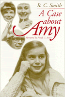

<body bgcolor="#FFFFFF" text="#000000" link="#0000FF" vlink="#CC0000" alink="#CC0000"><center><hr width="350" size="1" align="center" noshade>An inspirational and telling story about a family's struggle to get equal educational opportunity for their deaf daughter<hr width="350" size="1" align="center" noshade><p><a href="https://cdcshoppingcart.uchicago.edu/Cart/ChicagoBook.aspx?ISBN=9781566394116&&PRESS=temple" target="_top">Buy this book!</a> | <a href="https://cdcshoppingcart.uchicago.edu/Cart/Cart.aspx?PRESS=temple" target="_top">View Cart</a> | <a href="https://cdcshoppingcart.uchicago.edu/Cart/Cart.aspx?PRESS=temple" target="_top">Check Out</a></p><p></p></center><!--none//--><h1>A Case About Amy</h1>
<H2><!-- Foreword by Bowe, Frank G. --></H2>
<h3>R. C. Smith, foreword by Frank G. Bowe</h3>
<P>cloth 1-56639-411-2 $86.50, Jun 96, <FONT COLOR=#990033>Out of Stock Unavailable</FONT>
<br>paper 1-56639-412-0 $33.95, Jun 96, <FONT COLOR=#990033>Available</FONT>
<br>Electronic Book 1-43990-531-2 $33.95 <FONT COLOR=#990033>Out of Stock Unavailable</FONT>
<BR> 344 pp
6x9
</P><p>The Rowley family's struggle began when Amy entered kindergarten and culminated five years later in a pivotal decision by the U.S. Supreme Court. In effect, the Court majority concluded that the Individuals with Disabilities Education Act did not mandate equal opportunity for children with disabilities in classes with typical children; a disappointing decision for disability advocates.
<p>The Supreme Court decided that schools were required only to provide enough help for children with disabilities to pass from grade to grade. The Court reversed the lower courts' rulings, which had granted Amy an interpreter, setting a precedent that could affect the quality of education for all individuals with disabilities.
<p>From the time Amy entered kindergarten in Peekskill, New York, her parents battled with school officials to get a sign language interpreter in the classroom. Nancy and Clifford Rowley, also deaf, struggled with officials for their own right to a communications process in which they could fully participate. Stuck in limbo was a bright, inquisitive child, forced to rely on partial lipreading of rapid classroom instruction and interaction, and sound amplifiers that were often broken and always cumbersome.
<p>R.C. Smith chronicles the Rowley family's dealings with school boards, lawyers, teachers, expert consultants, advocates, and supporters, and their staunch determination to get through the exhaustive process of presenting the case time after time to school adjudicative bodies and finally the federal courts. The author also documents his own "coming to awareness" about how the "able" see the "disabled."
<BR>&nbsp;<h2>Excerpt</h2><P>Excerpt available at <a href="http://www.temple.edu/tempress">www.temple.edu/tempress</a></p>
<BR>&nbsp;<h2>Contents</h2><P>
<p>Foreword &#150 Frank G. Bowe
<br>Acknowledgments
<br>Legal Chronology
<br>1. Time Tears Us Apart
<br>2. The Battle Joined
<br>3. Like Light Pouring Down over Me
<br>4. Vindication by Trial
<br>5. A Case about Amy
<br>6. A "Voice" in the Classroom
<br>7. "Full Potential" in the Court
<br>8. Maybe It Wouldn't Happen Today
<br>9. What Amy Hears
<br>10. A Matter of Growth
<br>11. Amy in Oz
<br>12. Equal Opportunity Writ Large
<br>13. Is It Really Money?
<br>14. Amy Remembering
<br>15. Not Quite Human
<br>16. Struggling <I>and</I> Succeeding
<br>17. If Heaven Isn't Accessible, God Is in Trouble
<br>18. To Be Who We Are
<br>Index
</P><BR>&nbsp;<H2>About the Author(s)</H2>
<P>For 25 years, <B>R. C. Smith </B>was a Senior Associate at MDC, Inc., in Chapel Hill, North Carolina, a nonprofit organization dedicated to creative approaches for bettering the lives of disadvantaged people. Also a former columnist, editor, and reporter for several southern newspapers and a part-time journalism instructor at the University of North Carolina, Chapel Hill, he is now a freelance writer based in Jamestown.</P>
<BR><H2>Subject Categories</H2>
<p><A HREF="/tempress/disability.html" TARGET="_top">Disability Studies</a>
<BR><A HREF="/tempress/education.html" TARGET="_top">Education</a>
</p>
<BR><h2 class="inpageheading">In the series</H2>
<P><I><a href="http://www.temple.edu/tempress/health_society.html" onMouseOver="window.status='Click for other books in this series!'; return true;" onMouseOut="window.status=''; return true;" target="_top">Health, Society, and Policy</a></i>, edited by Sheryl Ruzek and Irving Kenneth Zola.
</p><p>No longer active.<p><i>Health, Society and Policy</i>, edited by Sheryl Ruzek and Irving Kenneth Zola, takes a critical stance with regard to health policy and medical practice, ranging broadly in subject matter. Backlist titles include books on the legal and professional status of midwifery, the experience and regulation of kidney transplants, the evolution of federal law on architectural access, and a political/ethical argument for making the community responsible for universal access to health care.</p>
<p align="center"><a href="https://cdcshoppingcart.uchicago.edu/Cart/ChicagoBook.aspx?ISBN=9781566394116&&PRESS=temple" target="_top">Buy this book!</a> | <a href="https://cdcshoppingcart.uchicago.edu/Cart/Cart.aspx?PRESS=temple" target="_top">View Cart</a> | <a href="https://cdcshoppingcart.uchicago.edu/Cart/Cart.aspx?PRESS=temple" target="_top">Check Out</a></p><p><font face="Arial" size="1"><a href="copyright.html" onMouseOver="window.status='Web Copyright Policy';return true;" onMouseOut="window.status=''" title="Web Copyright Policy">&copy;</a> 2015 <a href="http://www.temple.edu" target="new" onMouseOver="window.status='Link to Temple University home page';return true;" onMouseOut="window.status=''" title="Link to Temple University home page">Temple University</a>. All Rights Reserved. http://www.temple.edu/tempress/titles/1221_reg.html</font></p>